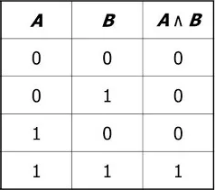

Основные Логические операции
Коньюнкция
Конъюнкция (логическое «И») — это операция, которая возвращает значение истина только в том случае, если оба её операнда имеют значение истина. Обозначается символом ∧.
Дизъюнкция
Дизъюнкция (Логическое "ИЛИ") — это операция, которая возвращает значение истина, если хотя бы один из её операндов имеет значение истина. Обозначается символом ∨.
Отрицание
Отрицание (Инверсия) — это операция, которая преобразует значение истина в значение ложь и наоборот. Обозначается чаще всего символом ¬ или !. Если A — это некоторое логическое выражение, то инверсия этого выражения будет обозначаться как ¬A.
Импликация
Отрицание (логическое следование) — сложное логическое выражение, истинное всегда, кроме как из истины следует ложь.
То есть данная логическая операция связывает два простых логических выражения, из которых первое является
условием (А), а второе (В) — следствием.
Обозначение импликации: A → B, читается «если A, то B».
Эквиваленция
Эквиваленция — это логическая операция, принятая в формализованных языках для образования сложных
высказываний из простых. По смыслу она равнозначна строгому условию «если…, то…», принятому в
естественном языке.
Эквиваленция проверяет, одинаковы ли значения логических переменных. Она выдаёт
«Истину», если они одинаковы (1 и 1, 0 и 0), и «Ложь», если не одинаковы (1 и 0, 0 и
1).
Обозначается эквиваленция тремя полосами (как равно, только с ещё одной чертой): A ≡ B.
Сложение по модулю 2
Сложение по модулю 2 — логическая операция, соединяющая два высказывания при помощи связки «или»,
употреблённой в исключающем смысле.
Символически обозначается с помощью знака ⊕ (А ⊕ В) и читается:
«либо А, либо В».

Стрелка Пирса
Стрелка Пирса возвращает истинное значение, если оба высказывания имеют одинаковое логическое
значение (оба истинны или оба ложны), или если второе высказывание ложно.
Символическое обозначение
стрелки Пирса: ↓.

Штрих Шельфера
Штрих Шельфера — это логическая операция, которая является отрицанием конъюнкции (логического И). Иными словами, это операция, результатом которой является ложь только в том случае, если оба операнда истинны. В других случаях результатом будет истина.